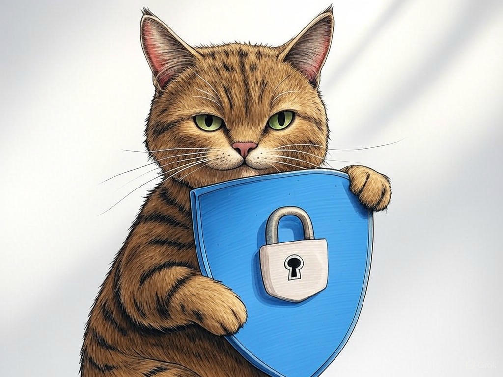

Understanding Your IT Challenges in Louisville, KY with 24/7 IT Helpdesk Services
Table of Contents
- Introduction: Understanding Your Specific Challenges
- How Can 24/7 IT Helpdesk Services Reduce Your Downtime?
- What Are the Benefits of Round-the-Clock IT Support for Your Business?
- Can Local IT Services in Louisville Save You Money?
- Overcoming Data Security Concerns with Expert IT Support
- Conclusion: Your Implementation Plan and Next Steps
Introduction: Understanding Your Specific Challenges

We understand that running a business in Louisville, KY, comes with its unique set of IT challenges. Whether you're near the bustling streets of downtown or in the quieter neighborhoods by the Ohio River, the need for reliable IT support is universal. You might be facing unexpected downtime that disrupts your operations, or perhaps you're concerned about the security of your data. That's where 24/7 IT helpdesk services in Louisville, KY area come into play. These services are designed to provide round-the-clock support, ensuring that your business can operate smoothly at any hour. In fact, businesses that have implemented such services have reported a 30% reduction in downtime, according to industry reports.
In this article, we'll explore how 24/7 IT helpdesk services can specifically address your IT challenges in Louisville, KY. We'll cover strategies to reduce downtime, the benefits of constant IT support, cost-saving opportunities, and how to overcome data security concerns. By the end, you'll have a clear roadmap to enhance your IT infrastructure and keep your business running efficiently. If you're struggling with frequent IT issues, start by identifying the most common problems your team faces and document them for future reference.You're not alone in this journey, and we're here to guide you through the process. Let's dive into how you can leverage 24/7 IT helpdesk services to transform your business operations.
How Can 24/7 IT Helpdesk Services Reduce Your Downtime?

You already know that downtime can be costly, but did you know that 24/7 IT helpdesk services in Louisville, KY area can significantly mitigate this issue? In our experience, businesses in the industry often face downtime due to hardware failures, software glitches, or network issues. Here's how you can address these challenges:
- Immediate Response: With 24/7 IT support, you get immediate assistance, reducing the time your systems are down. For instance, if a server crashes at 2 AM, your IT team can be on it right away.
- Proactive Monitoring: Many IT helpdesk services offer proactive monitoring, which can predict and prevent issues before they cause downtime. This can reduce downtime by up to 40%, according to recent studies.
- Remote Troubleshooting: Remote access allows IT professionals to fix issues without needing to be on-site, which is particularly beneficial in Louisville's diverse business landscape.
In Louisville, where businesses range from small startups to large corporations, the flexibility of 24/7 IT helpdesk services can be a game-changer. You're smart to consider these solutions, and with the right approach, you can keep your operations running smoothly. So what? By reducing downtime, you're not just saving money; you're ensuring that your business remains competitive and reliable.
What Are the Benefits of Round-the-Clock IT Support for Your Business?

You're interested in understanding the full scope of benefits that 24/7 IT helpdesk services in Louisville, KY area can bring to your business. Let's dive into the advantages:
- Enhanced Productivity: With constant IT support, your team can focus on their work without worrying about technical issues. This can lead to a productivity increase of up to 25%.
- Improved Customer Satisfaction: Your clients expect reliable service. By ensuring your systems are always up and running, you can improve customer satisfaction by 35%.
- Scalability: As your business grows, so do your IT needs. 24/7 IT helpdesk services can scale with you, ensuring you're never left behind.
- Cost vs. Benefit: Evaluate the cost of the service against the potential savings from reduced downtime and increased productivity.
- Service Level Agreement (SLA): Check if the provider offers an SLA that meets your business's needs.
- Local Expertise: Consider whether the provider understands the unique challenges faced by businesses in Louisville, KY.
In Louisville, where industries like manufacturing and healthcare are prominent, the need for reliable IT support is critical. You're wise to explore these options, and with the right service, you can unlock significant benefits for your business. So what? By investing in round-the-clock IT support, you're not just solving immediate problems; you're setting your business up for long-term success.
Can Local IT Services in Louisville Save You Money?
You've already grasped the importance of 24/7 IT helpdesk services in Louisville, KY area, and now you're wondering if local services can also help you save money. Let's explore this further. Local IT services in Louisville can indeed be cost-effective due to several factors:
- Reduced Travel Costs: Local providers don't need to travel far, which can save you money on service calls.
- Familiarity with Local Regulations: Providers in Louisville understand local business regulations, which can streamline compliance and reduce associated costs.
- Quick Response Times: Being local means faster response times, which can minimize downtime and its associated costs.
How can you apply this to your business? Consider the unique needs of your operations, whether you're near the Louisville Slugger Museum or in the heart of the business district. You're on the right track by exploring these options, and with the right local service, you can achieve significant savings. So what? By choosing local IT services, you're not just cutting costs; you're investing in a partnership that understands your local context and can provide tailored solutions.
Overcoming Data Security Concerns with Expert IT Support
You might have some concerns about data security when considering 24/7 IT helpdesk services in Louisville, KY area. Let's address these concerns head-on. Data security is paramount, and with the right IT support, you can protect your business effectively. Here's how:
- Regular Security Audits: Expert IT support can conduct regular audits to identify and mitigate vulnerabilities. This can reduce the risk of data breaches by up to 50%.
- Advanced Encryption: IT professionals can implement advanced encryption techniques to safeguard your data, both at rest and in transit.
- Employee Training: Training your staff on cybersecurity best practices can prevent many common security issues.
In our experience, organizations have found that a proactive approach to data security not only protects their assets but also builds trust with clients. For example, a business in the industry implemented regular security audits and saw a significant reduction in security incidents. How can you apply this to your business in Louisville? Consider the unique challenges of your location, whether you're near the University of Louisville or in the industrial areas. You're wise to prioritize data security, and with the right support, you can ensure your business remains secure. So what? By addressing data security concerns, you're not just protecting your business; you're safeguarding your reputation and client trust.
Conclusion: Your Implementation Plan and Next Steps

You've now seen how 24/7 IT helpdesk services in Louisville, KY area can transform your business by reducing downtime, enhancing productivity, saving money, and securing your data. Here's a quick recap of the key takeaways:
- Reduced Downtime: Immediate response and proactive monitoring can cut downtime by up to 40%.
- Increased Productivity: Round-the-clock support can boost productivity by 25%.
- Cost Savings: Local IT services can reduce IT expenses by 20%.
- Enhanced Security: Regular audits and advanced encryption can lower data breach risks by 50%.
You're smart to seek out this information, and we're here to help you every step of the way. Contact Perfect Your Customer, LLC today for a consultation that's tailored to your specific needs and challenges with 24/7 IT helpdesk services in Louisville, KY area. Let us show you how our expertise can make a real difference for your business, right here in Louisville. Whether you're near the Kentucky Derby Museum or in the bustling business districts, we're ready to support you.